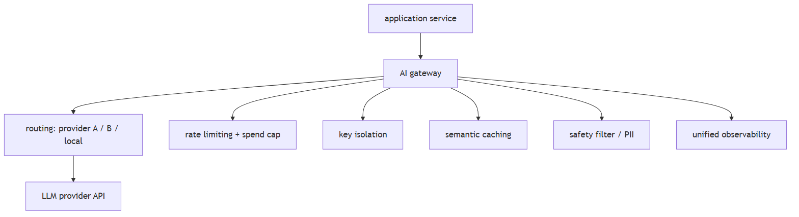
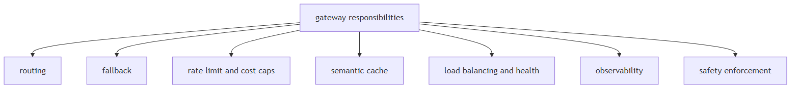
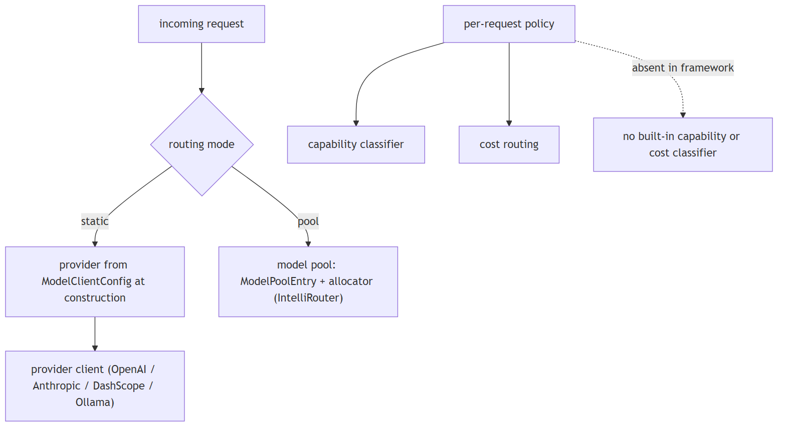
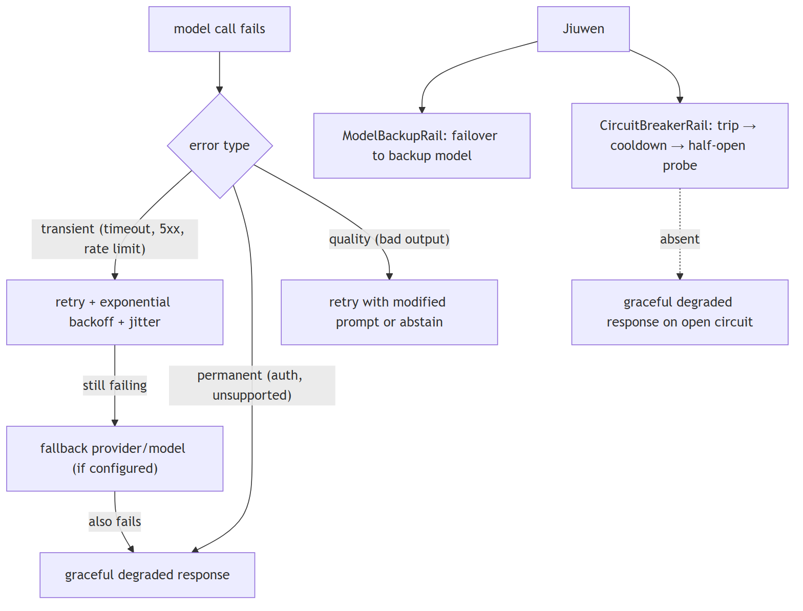

Model routing & gateways
1. What is an AI gateway and when do you need one?
Mechanism intermediate
TL;DR. An AI gateway centralises routing, rate-limiting, key isolation, semantic caching, safety enforcement, and observability for all LLM calls across multiple services. Needed when multiple services call LLMs independently, per-tenant budgets are required, or a single audit log is needed.
Key points.
- Routing: send requests to different providers based on cost, latency, availability, or model capability.
- Rate limiting and cost enforcement: per-tenant token budgets and hard spend caps without touching application code.
- Key isolation: API keys stay in the gateway; application services hold only internal tokens.
- Semantic caching: embed queries, return cached responses for near-duplicates — reduces redundant model calls.
- Safety enforcement: content filtering and PII redaction applied uniformly before the request reaches the model.
- Observability: every call logged with provider, model, tokens, latency, and cost in one place.
- When needed: multiple services calling LLMs (key sprawl), strict budgets, multi-provider fallback, unified audit log.
Concept. An AI gateway is an infrastructure layer that sits between your application and one or more LLM provider APIs. It centralises concerns that would otherwise be duplicated in every service that calls a model.

In Jiuwen. No standalone AI gateway component. Equivalent functions are distributed: provider routing via create_model_client (agent-core/openjiuwen/core/foundation/llm/model_clients/init.py:58) and ModelPoolEntry (agent-core/openjiuwen/agent_teams/models/pool.py:38); cost tracking via usage_cost.py:101; circuit breaking via CircuitBreakerRail (jiuwenswarm/jiuwenswarm/agents/harness/common/rails/execution_guard/circuit_breaker_rail.py:303); content safety via PromptInjectionGuardrail (agent-core/openjiuwen/core/security/guardrail/builtin.py:60); observability via AgentObservabilityRail (agent-core/openjiuwen/harness/observability/rail.py:355). These are per-agent, not cross-service. A separate gateway upstream of Jiuwen would handle cross-service key isolation and semantic caching.
Under the hood
Implementation
No standalone gateway component. Its functions are distributed: provider routing through the model pool (ModelPoolEntry), cost tracking in usage_cost.py, circuit breaking via CircuitBreakerRail, content safety via the guardrail layer, and observability events through the harness observability rail. A separate AI gateway upstream of Jiuwen would handle cross-service key isolation and semantic caching.
Code anchors
| Code anchor | What it points to |
|---|---|
jiuwenswarm/jiuwenswarm/server/runtime/usage_cost.py:101 |
cost meter |
jiuwenswarm/jiuwenswarm/agents/harness/common/rails/execution_guard/circuit_breaker_rail.py:1 |
CircuitBreakerRail |
agent-core/openjiuwen/core/security/guardrail/builtin.py:1 |
guardrail |
agent-core/openjiuwen/harness/observability/rail.py:1 |
observability events |
2. How a gateway's responsibilities map onto a production LLM stack
Concept intermediate
TL;DR. A gateway composes six concerns that appear throughout a production LLM stack.
Key points.
- Routing chooses among providers by cost, latency, or availability
- Fallback defines what happens when a model call fails
- Rate limiting and cost caps bound spend per tenant or user
- Semantic caching removes redundant calls for repeated or similar questions
- Load balancing and endpoint health keep healthy endpoints in rotation
- Observability attaches span, trace, and cost metadata to every call
- Safety enforcement rejects or sanitizes requests before they reach the model
Concept. Each of the gateway's six responsibilities addresses a distinct production concern. Routing chooses among providers by cost, latency, or availability. Fallback defines what happens when a call fails, so the user does not see an error. Rate limiting and cost caps bound spend per tenant or user and prevent a single client from exhausting the budget. Semantic caching removes redundant calls when the same or a similar question recurs. Load balancing and endpoint health keep healthy endpoints in rotation and drop failing ones. Observability attaches span, trace, and cost metadata to every call so behaviour can be audited. Safety enforcement rejects or sanitizes requests before they reach the model. Together these are the concerns to name when designing the layer between an application and its model providers.

In Jiuwen. Given Jiuwen, routing is the model-pool router with health, rate, and latency scoring; the other gateway concerns are configured separately rather than composed into one component.
Under the hood
Implementation
Routing lives in the ModelPoolEntry router with health, rate, and latency scoring; the remaining concerns are configured separately rather than composed by a single component, so a dedicated AI gateway would sit upstream of Jiuwen's model clients.
3. How do you route between multiple model providers — and when do you switch dynamically?
Mechanism advanced
TL;DR. Route between providers statically (config) or dynamically (primary/fallback, capability, cost); ensure response-format compatibility and observable routing decisions.
Key points.
- Static: provider set at agent construction in ModelConfig.
- Dynamic patterns: primary/fallback, capability router, cost router.
- Jiuwen: no built-in runtime router; CircuitBreakerRail trips but doesn't reroute.
Concept. Multi-provider routing has two modes: static (choose provider at config time based on cost, capability, or data residency) and dynamic (route at request time based on load, availability, or task type). Dynamic routing patterns: (1) primary/fallback — always try provider A, fall back to B on error or timeout; (2) capability routing — send code tasks to a coding-optimized model, chat tasks to a general model; (3) cost routing — send cheap queries to a small cheap model, expensive reasoning to a large model (classifier decides). Key considerations: response format compatibility across providers (different tool-call schemas), token counting per-provider, and observable routing decisions (which provider was actually used).

In Jiuwen. create_model_client (agent-core/openjiuwen/core/foundation/llm/model_clients/init.py:58) resolves the provider client; routing is configured per agent through ModelClientConfig and ProviderType. At the team layer a real model pool exists (ModelPoolEntry, agent-core/openjiuwen/agent_teams/models/pool.py:38) with allocators including IntelliRouterAllocator. No built-in per-request capability classifier or cost-based dispatcher exists. CircuitBreakerRail trips on consecutive failures and opens the circuit, but does not reroute to an alternate provider.
Under the hood
Implementation
Routing is configured per agent through ModelClientConfig and ProviderType, and create_model_client resolves the provider client. At the team layer there is a real model pool: ModelPoolEntry plus allocators (including IntelliRouterAllocator) select a model by name, rotation, and health. What is not built in is a per-request capability classifier or cost-based dispatcher that picks a model for each call; those policies live in the application or in the pool configuration. CircuitBreakerRail trips on consecutive failures and cools down, which is the closest analogue to provider failover.
Code anchors
| Code anchor | What it points to |
|---|---|
agent-core/openjiuwen/core/foundation/llm/model_clients/__init__.py:58 |
create_model_client provider dispatch |
agent-core/openjiuwen/core/foundation/llm/schema/config.py:13 |
ProviderType / ModelClientConfig |
agent-core/openjiuwen/agent_teams/models/pool.py:38 |
ModelPoolEntry; agent-core/openjiuwen/agent_teams/models/allocator.py:452 — IntelliRouterAllocator |
jiuwenswarm/jiuwenswarm/agents/harness/common/rails/execution_guard/circuit_breaker_rail.py:303 |
CircuitBreakerRail failure trip + cooldown |
4. What is the correct fallback sequence when a model call fails?
Mechanism intermediate
TL;DR. Transient errors → retry with backoff; still failing → fallback provider; permanent errors → skip retry; quality failures → modified prompt or abstain. Always return a graceful degraded response.
Key points.
- Transient (timeout, 5xx, rate limit): retry ×3 with exponential backoff.
- Permanent (auth, unsupported): fail immediately.
- Quality (bad output): retry with modified prompt or abstain.
- Jiuwen: CircuitBreakerRail trips on consecutive errors but raises — no graceful degraded response, no auto fallback provider.
Concept. Model call failures fall into three categories: transient (timeout, rate limit, 5xx), permanent (auth error, unsupported model, input too long), and quality (response parsed but content invalid/refused). The correct fallback sequence: (1) retry with exponential backoff + jitter for transient errors (max 3 attempts); (2) if still failing, route to a fallback provider/model if one is configured; (3) if the fallback also fails or no fallback exists, return a graceful degraded response — "I was unable to complete this request, please try again" — rather than surfacing a raw exception. Do not retry permanent errors (they will not recover). Do not retry quality failures as-is (retry with a modified prompt or abstain).

In Jiuwen. CircuitBreakerRail (jiuwenswarm/jiuwenswarm/agents/harness/common/rails/execution_guard/circuit_breaker_rail.py:303) tracks consecutive failures, opens after a threshold, then half-opens to probe recovery. ModelClientConfig.timeout is forwarded to the provider client. No automatic fallback-provider routing exists — an open circuit raises an exception. No retry-with-modified-prompt path for quality failures. Graceful degraded responses are not emitted by any rail.
Under the hood
Implementation
ModelBackupRail provides failover to a backup model on failure, and CircuitBreakerRail tracks consecutive failures, opens the circuit during cooldown, and half-opens to probe recovery. ModelClientConfig.timeout is forwarded to the provider client. There is no structured degraded response emitted by a rail, and no retry-with-modified-prompt path for quality failures.
Code anchors
| Code anchor | What it points to |
|---|---|
jiuwenswarm/jiuwenswarm/agents/harness/common/rails/execution_guard/circuit_breaker_rail.py:303 |
CircuitBreakerRail open/closed/half-open states |
agent-core/openjiuwen/core/single_agent/rail/model_backup.py:9 |
ModelBackupRail failover |
agent-core/openjiuwen/core/foundation/llm/schema/config.py:102 |
ModelClientConfig.timeout |